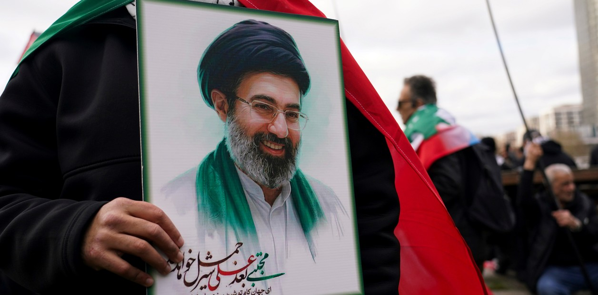

Guerra entre Estados Unidos, Israel e Irán, EN VIVO: Trump afirma que Mojtaba Khamenei podría estar muerto y que no sabe quién gobierna Irán
En el día 17 del conflicto bélico, Israel lanzó una nueva oleada de bombardeos e Irán respondió con ataques contra Tel Aviv y bases de Estados Unidos. Crece el misterio y los rumores por el paradero del nuevo líder supremo.

A horas de presentarse a declarar en la Causa Cuadernos, Cristina Kirchner criticó a la Justicia: "El show debe continuar"
La expresidenta publicó un mensaje en las redes sociales en el que cuestionó que la hayan citado de forma presencial en Comodoro Py. También cruzó a Javier Milei por su programa económico.

Diputados: la comisión investigadora de la causa Libra pidió que Javier y Karina Milei den explicaciones
El legislador de la Coalición Cívica, Maximiliano Ferraro, aseguró que el mandatario y su hermana fueron clave para la promoción de la criptomoneda.

Los precios de los combustibles subieron casi 9% en Argentina desde que se desató la guerra en Medio Oriente
De acuerdo a un relevamiento privado, se registraron nuevos aumentos en los valores de venta en los surtidores. Los incrementos generan preocupación por el traslado a la cifra de inflación de marzo, que se conocerá a mediados de abril.